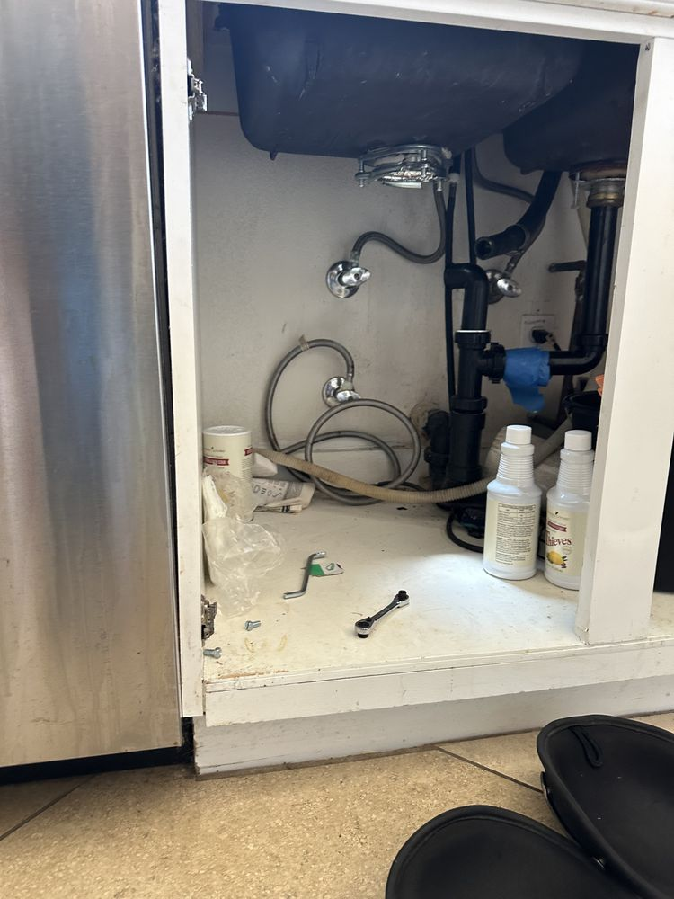
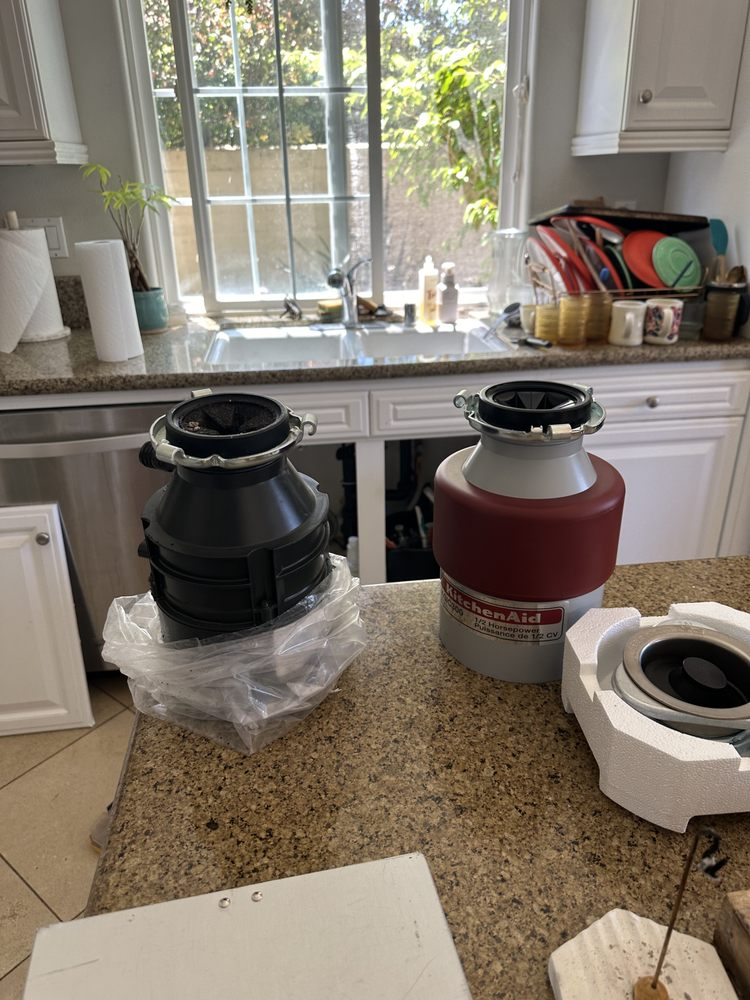

Garbage Disposal
Under-Sink Disposal Installation
A garbage disposal installed under the kitchen sink, with the drain trap and dishwasher hose connected and tools still out on the cabinet floor.
Jammed, humming, dead, or leaking. InSinkErator, Moen, Waste King, and all major brands. Same-day service available.
5.0 · 156 Google reviewsMon–Sat, 8am–7pm. You don't need to know which part failed; tell us what the disposal is doing.

Family-owned since 2017 · Licensed, bonded & insured

Garbage Disposal
A garbage disposal installed under the kitchen sink, with the drain trap and dishwasher hose connected and tools still out on the cabinet floor.
KitchenAid · Garbage Disposal
The old disposal came out and a new KitchenAid unit went in, photographed on the counter still in its packaging before installation.
From our 156 verified 5-star Google reviews
Ag was great did a wonderful job. Was an amazing guy highly recommend
AJ was great and explained everything to us and was an easy fix. Highly recommend
Great experience, arrived early in window, provided adequate notice before arrival, was courteous and completed the repair without issue. A professional!
Same-day service is available. If a part has to be ordered, you will know before any work starts.
Request a RepairEstimates vary by brand, part availability, and diagnosis. Final quote is provided before repair. See full pricing guide
Most disposal calls are diagnosed and resolved in a single visit. Understanding the symptom tells you what you are dealing with before we arrive.
Every brand has its own failure patterns. Knowing your brand's common issues lets us arrive with the right parts and finish the job in one visit more often.
Badger and Evolution Series, the most common installs in Orange County
Badger 5 (1/2 HP) is the most common unit we service. Evolution Series (Excel, Compact) appears in premium kitchen remodels across Irvine and Newport Beach.
GX Series, common with Moen faucet installs
GX Series disposals are often installed alongside Moen faucet replacements. SoundSHIELD insulation wraps the motor housing for quiet operation.
L-Series, common in older OC tract homes
L-1001 and L-2600 are budget-to-mid-range units widely installed in OC tract homes built before 2005. High-speed magnetic motors run at 2,600+ RPM.
We also service KitchenAid, Whirlpool, GE, Frigidaire, Kenmore, American Standard, and all other major brands.
Independent repair service. Not affiliated with or endorsed by these manufacturers; brand names are trademarks of their owners. We make no claim of factory authorization unless stated. If your unit is under manufacturer warranty, verify with the manufacturer before booking.
Garbage disposals are cheaper to replace than most appliances, so the repair-versus-replace math is different here. What failed and how old the unit is matters more than brand alone.
The quick test: If the unit is under 6 years old and the issue is anything other than a burned motor, repair it. If the unit leaks from the bottom of the housing, the internal seal has failed and no repair is economical regardless of age. We'll tell you which situation you are in before any work begins.
| Repair Type | Typical Range |
|---|---|
| Service call / diagnostic: Orange County market average (often credited toward repair) | $75 – $100 |
| Jam clearing / reset & realign | $99 – $160 |
| Sink flange / mounting reseal (leak) | $120 – $240 |
| Drain or dishwasher-inlet fitting leak | $130 – $250 |
| Wall switch / wiring replacement | $130 – $260 |
| New disposal unit installed (1/2–3/4 HP) | $200 – $400 |
Estimates vary by brand, part availability, and diagnosis. Final quote is provided before repair. See our full appliance repair cost guide for broader Orange County pricing context.
Universal Appliances Repair Group Inc. provides garbage disposal repair across Orange County, California, servicing InSinkErator, Moen, Waste King, KitchenAid, Whirlpool, GE, and all major brands. We repair disposals that are humming but not grinding, completely dead, leaking, tripping the breaker, or making grinding noises.
Our technicians serve Anaheim, Irvine, Huntington Beach, Costa Mesa, and all of Orange County, with same-day service available. Call (949) 629-5365 or book online to schedule a garbage disposal repair visit.
Still have a question? Call (949) 629-5365.
Same-day service available. Jams cleared, resets diagnosed, leaks fixed, and honest advice if replacement is the better call. Call before noon for same-day availability.